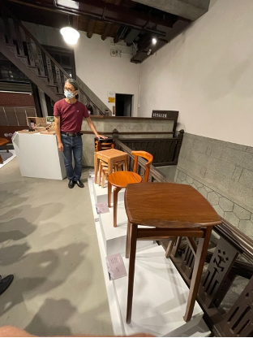
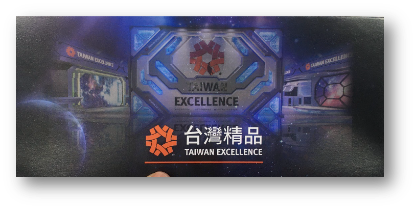
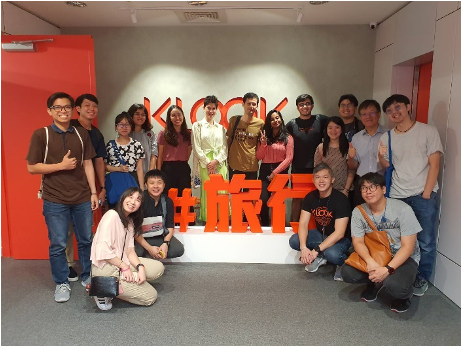
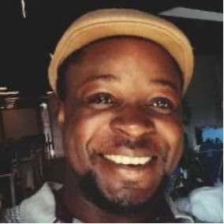

Thinking & Writing
Design thinking is part of the portfolio too. This is where I research new ideas, organise my thoughts, and build a reference I can come back to.

Sustainability
ESG and SDG are key frameworks for organizations to navigate risks, drive sustainable growth, and contribute to a more sustainable future. The furniture industry is…

Exhibition
Nestled in the bustling Nangang District of Taipei City, the Taiwan Excellence Exhibition stands as a testament to Taiwan's relentless pursuit of innovation. This…

Industry Visit
Ever wondered how some companies manage to redefine the way we travel? Let me take you behind the scenes of one such game-changer: KLOOK. Based in Taiwan, KLOOK isn't…

Design Seminar
In the ever-evolving world of design, the journey from concept to creation is both an art and a science. Recently, I had the privilege of attending a seminar led by the…